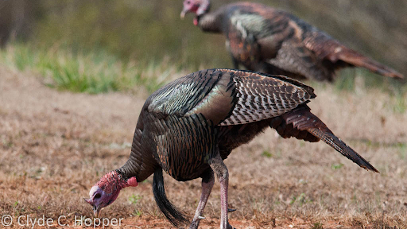

Turkey
Diet
Turkeys are omnivores and eat anything they can find, including grasses, invertebrates, forbs, seeds, tubers, nuts, fruits, and occasionally small mammals, reptiles, or amphibians. While plants usually make up for most of the turkey’s diet, insects would be their main source of protein. Turkeys would spend the day scratching and pecking at the ground searching for food. The food will be stored in the bird’s crop (a chamber within the esophagus) before it is swallowed.
SourceHabitat

The wild turkeys were introduced to California in 1877. With this introduction, turkeys have resided in many portions of the state. The most common turkey (The Rio Grande Turkey), is found mostly in deciduous riparian oak and conifer-oak woodlands. Merriam Turkeys (a subspecies of turkey) are found in higher elevations in conifer-black oak habitats. Generally, turkeys habit in areas with a mix of large trees with grassy openings near water. They also reside in rugged and hilly terrain which allows them to avoid predators easier.
SourceBio

Turkeys are distinct due to their large size, compared to common smaller birds. Wild turkeys have long reddish-yellow to grayish-green legs. The male turkeys have body feathers that are blackish and dark. Female turkeys have duller feathers that are often gray-brown with a coppery sheen. Male turkeys are polygamous, meaning that they strut their feathers and show off their tail to impress females. Females tend to adventure alone to find a safe nest site. These nests are usually found in tall grass, ground covers, or thick shrubs that allow the adult and eggs to hide. Turkeys are also a flocking species, so they tend to stick with their kind.
Source